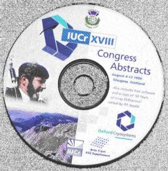

The items in this files are:
Cover Story - IUCr XVIII, Glasgow, 4 August 1999
The green background of the front cover reflects the green binding on the delegates carrying bags for IUCr XVIII, which were printed with a colourful 'tartan' like pattern.
The central photograph was taken by the official photographer to the
Congress, Venart Photography, of Glasgow. It shows the President of the
Royal Society, Sir Aaron Klug, on the left and on the right, the local
organiser, Professor Chris Gilmore. We were very pleased that Sir Aaron
found time in his busy schedule to come to Glasgow to welcome delegates to
the Congress during the Opening Ceremony on behalf of the Royal Society, who
are still officially the UK member of the International Union of
Crystallography, although they will be handing over this role soon to the
BCA. Many others extended their welcome during the Opening Ceremony,
beginning with Ted Baker, New Zealand, President of the IUCr, and continuing
with representatives from the University of Glasgow and the City of Glasgow
which hosted a Civic Reception for delegates later that evening, The Ewald
prize lecture is reported later in this issue; a report on the Opening
entertainments with accompanying photographs will appear in the next.
Before going on a well-earned holiday our local organiser gave me a short message for you; the Conference Organiser sends her thanks:
"The dust is finally settling after the largest crystallography conference ever held. The statistics tell some of the story: over 2,620 attendees, more than 500 lectures, and in excess of 2,300 abstracts, but they cannot convey the sheer energy of the delegates and this meeting. It was held in the Scottish Exhibition and Conference Centre on the banks of the River Clyde in Glasgow. The permanent staff here see meetings come and go on a regular basis, but even they were delighted by how pleasant crystallographers are, and amazed at how hard they work! They thought they were the best bunch of people with whom they had ever worked.
The social events: the opening ceremony, whisky tasting and blending,
learn to dance, the gala ceilidh and the farewell fling left no-one in any
doubt that they were in Scotland and seemed to have been enjoyed in a
relaxed and friendly way. The city also took crystallographers to its heart:
how many of you were quizzed by taxi drivers as to what crystallographers
actually do?
A full report will appear in the next issue of Crystallography News, along with detailed reports on scientific highlights, press coverage and a full photo album."
Chris Gilmore
Local Organiser
Northern Networking Ltd, professional Conference Organisers for the XVIII
IUCr Congress 4th - 13th August 1999 Glasgow, would like to thank all those
in the British crystallographic community for their support.
It was a pleasure to work with you, we much appreciate your help, co-operation and friendly assistance.
Best Wishes
Gill Houston
Director
Delegates to IUCr XVIII received a splendid tartan patterned bag with the
usual very heavy abstracts book, and the collection of information from
exhibitors. However, when they had a chance to look inside the bag they
found the two items illustrated on this page.

A CD-ROM containing all the
abstracts, a copy of '50 years of X-ray diffraction' edited by P.P.Ewald,
snapshots of three websites, that of the IUCr, the BCA and the ACA and a
collection of images of Scotland. The CD-ROM is much easier to carry home
than the heavy abstracts book.
The other item was this little booklet, which fitted nicely into a handbag
or pocket. Into its 150 pages of A6 size it packed summaries of everything
you could possibly want to know about the Congress. Each day was clearly
marked by the date printed at the edge of a right hand page, There are many
more reports to come in the next issue; a few reports on the 'named'
lectures follow here but there is no room for reports on other plenary
lectures, the talks in the microsymposia or the social events.
I found Justin Wark's lecture in the last plenary session, 'Picosecond X-ray diffraction', to be the most exciting, with its prospect of much cheaper, faster X-ray sources using lasers.
The Closing Ceremony was held in the Barony Hall of Strathclyde University, adjacent to the Hall of Residence where many of us were staying. Judith Howard thanked everyone who had helped to make this Congress such a success before inviting Steve Maginn to present the CCDC prizes for the best posters by young scientists. Judged by a panel of distinguished crystallographers, four prizes were awarded. They were (in no particular order): P08.06.010: Peter Muller, Gottingen University, Germany; "Holes in Crystals ?"
- P11.0D.001: Alicia Beatty & Christer Aakeroy, Kansas State University, USA;
"Beyond the first dimension: organic/inorganic hybrid materials assembled via H-bonds"
- P09.09.008: C. Baehtz & H. Fuess, Darmstadt University, Germany;
"Tetrathiafulvalene and tetracyano-p-quinodimethane in faujasite"
- P13.22.003: S. Leoni & R. Nesper; "Tilings on hyperbolic surfaces as representatives of
chemical networks"
The Oxford Cryosystems prize for the best poster associated with cryogenics was awarded to F.Wien for poster P08.01.003 "A portable Cryostream to transfer crystals"
The outgoing IUCr President, Ted Baker, explained he had known this would be a wonderful Congress, years ago, when he had heard Chris Gilmore et al. explaining how to translate Glaswegian. He handed over to the new President, Henk Schenk, who recalled his first visit to an IUCr Congress in Stonybrook, USA, thanked Ted for preparing the IUCr so well for the new century and looked forward to working with us all for the next 3 years.
KateCrennell
 Click here to return to BCA homepage
Click here to return to BCA homepage